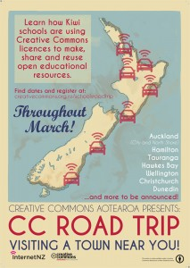
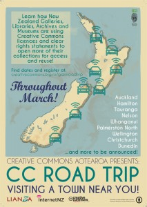

Weeks 2 and 3 of the CC Road Trip
BY ELIZABETH HERITAGE
Wow, we turned around twice and suddenly it’s the fourth week of the Creative Commons Road Trip!
Today Matt McGregor and I were in the same room as each other for the first time in a couple of weeks, and we took the opportunity to swap notes. It’s been a crazy busy fortnight but so much fun. Huge thanks to our awesome team of speakers and facilitators who are doing such a brilliant job -- and thank you to everyone who has come along so far. We’re really enjoying meeting new people, fielding new questions (that always make us think!), and hearing new stories about how Kiwis are using -- or want to use -- Creative Commons in such a range of different ways.
Week 2 of the Road Trip saw us travelling around the country; Matt in the North Island and me in the South. Between us -- and with the help of our trusty facilitators -- we delivered events in Hamilton, Christchurch, Dunedin, and Whanganui. Then Week 3 was even busier: the Creative Commons Road Trip made back to Auckland, Hamilton, and Dunedin, plus branching out to Tauranga and Palmerston North. Events have been targeted at the schools and heritage sectors.
It’s been great to have requests come in from schools and heritage institutions around the country for events where they are. We’ve added Napier to the mix now! The CC Road Trip will be there on 1-2 April.
 CC BY
{kind=link}
As if that weren’t enough, we’re really pleased to announce that we’re extending the Road Trip and branching out into Open Education. Come along to hear about the future of Open Educational Resources in Aotearoa, featuring:
- Billy Meinke, formerly of Creative Commons International, who will talk about his experience with some of the world’s largest OER projects, including the US Government’s $2billion TAAACT grants for OERs at community colleges.
- Simon Hart, Richard White and Erika Pearson from the Media Text Hack team at the University of Otago, who will talk about the development of an open, CC-licensed Media Studies textbook — over the course of a weekend.
- Matt McGregor, Public Lead of Creative Commons Aotearoa New Zealand, who will talk about the future of OERs in the Kiwi tertiary sector, and talk about how educators and institutions can create, use and adopt open textbooks.
We will be running events in mid-April in Auckland, Wellington, and Christchurch, completely free. Register here.
Onwards to Week 4! There are still places left for our Wellington and Christchurch heritage sector events, so register today!
 CC BY
{kind=link}
Elizabeth Heritage is the Communications Lead at Creative Commons Aotearoa New Zealand.